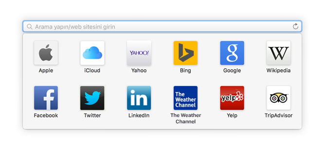
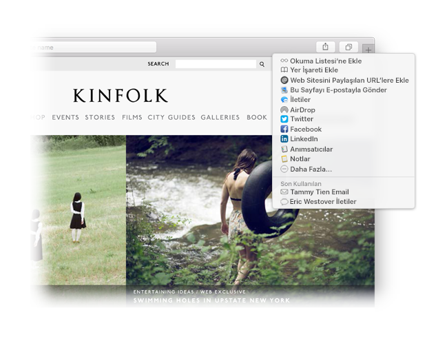

Bir favori bulun.
Favori web sitelerinize erişmek için Akıllı Arama alanını tıklayın. Gitmek istediğiniz bir siteyi tıklayın.

Bir siteyi sabitleyin.
Bir siteyi sabitlemek için sekmeyi sola doğru sürükleyin; bu şekilde site, sekme çubuğunda sabit kalır.

Bir bağlantıyı paylaşın.
Bir e-posta veya metindeki bağlantıyı göndermek; Facebook veya Twitter'da paylaşmak ya da Notlar'a eklemek için  düğmesini tıklayın.
düğmesini tıklayın.